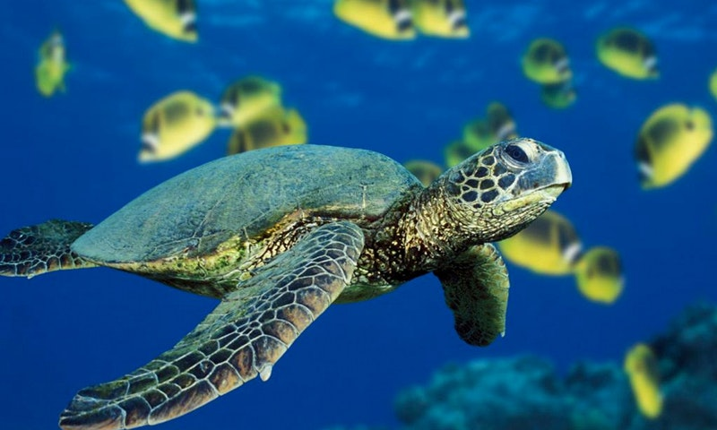
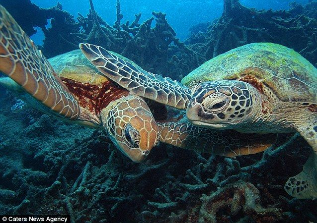
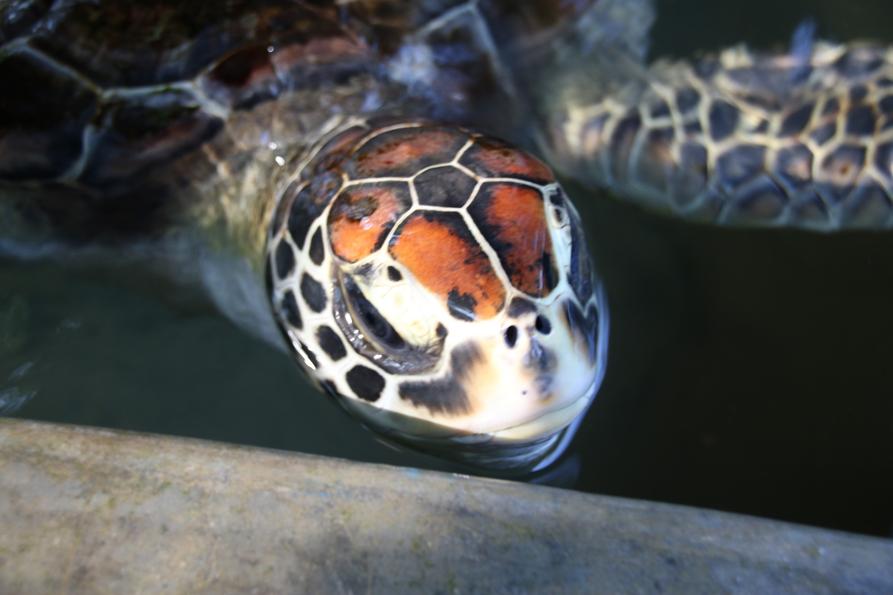
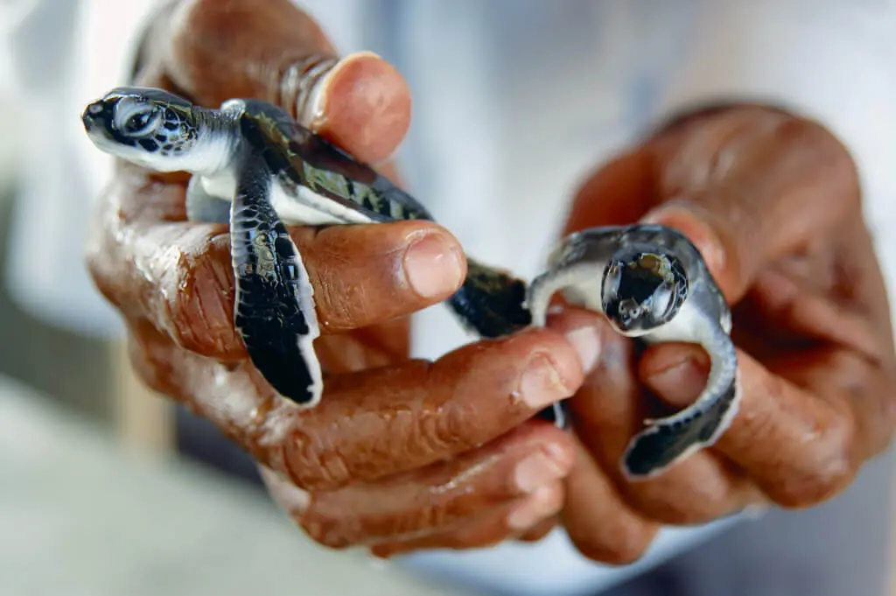

The Green Sea Turtle (Chelonia mydas) is a remarkable marine reptile found in tropical and subtropical oceans around the world. They are known for their distinctive green-colored fat and cartilage, which gives them their name. These turtles have a streamlined body and can grow up to 1.5 meters in length, weighing around 200 kilograms.
Green sea turtles primarily feed on seagrasses and algae, contributing to the health of coastal ecosystems. They are known for their migratory behavior, traveling long distances between feeding and nesting grounds. Female green sea turtles return to the same beaches where they hatched to lay their eggs, digging nests in the sand and burying their eggs before returning to the ocean.
Despite being protected under various conservation laws, green sea turtles face numerous threats, including habitat destruction, pollution, and entanglement in fishing gear. Additionally, the collection of their eggs and hunting of adult turtles for meat and shells have further contributed to their decline. Efforts are being made globally to protect and conserve these magnificent creatures, including the establishment of protected areas, beach monitoring programs, and educational initiatives to raise awareness about their importance in marine ecosystems.

The Hawksbill Sea Turtle (Eretmochelys imbricata) is a critically endangered species of sea turtle that inhabits tropical and subtropical oceans worldwide. These turtles are known for their distinctive pointed beak and beautiful, overlapping scales on their shells. Hawksbill sea turtles typically reach lengths of around 75 to 90 centimeters and weigh between 45 and 68 kilograms.
Hawksbills primarily feed on sponges but also consume other invertebrates and algae. They play a vital role in maintaining the health of coral reefs by controlling sponge populations. These turtles nest on beaches and lay their eggs in nests they dig in the sand. The nesting process typically occurs every 2 to 3 years, and each clutch may contain around 140 eggs.
Despite legal protection, hawksbill sea turtles face numerous threats such as habitat loss, pollution, climate change, and illegal hunting for their beautiful shells, which are used in the production of jewelry and decorative items. Conservation efforts include the establishment of protected areas, community engagement, and educational programs to raise awareness about the importance of preserving these endangered creatures and their habitats.

The Loggerhead Sea Turtle (Caretta caretta) is a large marine reptile found in oceans around the world. They are known for their massive heads and powerful jaws. Loggerheads can grow to an average length of about 90 centimeters and weigh between 135 and 300 kilograms.
These turtles have a reddish-brown shell and a heart-shaped carapace. They primarily feed on bottom-dwelling invertebrates such as crabs, clams, and jellyfish. Loggerhead sea turtles are known for their long migrations, traveling thousands of kilometers between feeding and nesting grounds.
Female loggerheads return to the same nesting beaches where they were born to lay their eggs. They dig nests in the sand and lay around 100 to 120 eggs per clutch. The eggs incubate for about 55 to 60 days before hatching.
Loggerhead sea turtles face numerous threats including habitat destruction, pollution, climate change, entanglement in fishing gear, and accidental capture. Conservation efforts involve the protection of nesting beaches, the implementation of turtle excluder devices in fishing gear, and educational programs to raise awareness about the importance of conservation.

The leatherback sea turtle (Dermochelys coriacea) is the largest living turtle species and is known for its unique shell, which is composed of a flexible and rubbery skin instead of a hard shell. They can reach lengths of up to 2 meters and weigh around 450 to 900 kilograms.
Unlike other sea turtles, leatherbacks feed predominantly on jellyfish. They have a specialized diet and a unique anatomy that allows them to consume their gelatinous prey efficiently. They undertake long-distance migrations, traveling thousands of kilometers between foraging and nesting areas.
Leatherbacks are known for their remarkable nesting behavior. Females return to their natal beaches to lay their eggs, with each clutch containing around 80 to 120 eggs. Unlike other sea turtles, they do not have a hard shell, which allows them to easily maneuver on land.
These turtles face significant threats, including entanglement in fishing gear, ingestion of marine debris, habitat degradation, and climate change impacts on nesting beaches. Conservation efforts involve protecting nesting sites, promoting sustainable fishing practices, and raising awareness about the importance of preserving this critically endangered species.

The olive ridley sea turtle (Lepidochelys olivacea) is a small to medium-sized sea turtle species found in tropical and subtropical waters. They are named for their olive-colored carapace. Olive ridleys typically measure around 60 to 70 centimeters in length and weigh between 35 and 50 kilograms.
These turtles are known for their unique nesting behavior called arribadas, where thousands of females simultaneously come ashore to lay their eggs on certain beaches. Each female typically lays around 100 to 150 eggs in a single nesting event.
Olive ridleys have a varied diet, primarily consisting of jellyfish, shrimp, crabs, and other small marine creatures. They play a crucial role in maintaining marine ecosystems by controlling populations of their prey species.
However, olive ridley sea turtles face various threats such as habitat loss, pollution, entanglement in fishing gear, and egg poaching. Efforts are being made to protect their nesting beaches, implement fishing gear modifications, and raise awareness about their conservation. The olive ridley is classified as vulnerable by the IUCN (International Union for Conservation of Nature).

The flatback sea turtle (Natator depressus) is a unique and lesser-known species of sea turtle found exclusively in the waters surrounding Australia. They are named for their flat-shaped carapace, which sets them apart from other sea turtle species. Flatbacks are medium-sized, with adults typically measuring around 80 to 100 centimeters in length and weighing approximately 70 to 90 kilograms.
These turtles have a diet primarily consisting of soft-bodied invertebrates, such as sea cucumbers and jellyfish, although they also consume some algae and seagrasses. Their feeding behavior is often associated with shallow, nearshore habitats.
Flatbacks exhibit a limited migratory behavior, staying within the coastal waters of Australia for their entire lives. They nest on specific beaches along the northern coast of the country, laying approximately 50 to 70 eggs in each clutch.
Threats to the flatback sea turtle include coastal development, habitat disturbance, entanglement in fishing gear, and climate change impacts. Conservation efforts focus on protecting their nesting sites, monitoring population trends, and reducing human-related disturbances to their habitats. Due to limited distribution and information, the flatback sea turtle is classified as data deficient by the IUCN (International Union for Conservation of Nature).

The Kemp's ridley sea turtle (Lepidochelys kempii) is the smallest and most endangered species of sea turtle. They are named after Richard Kemp, who first documented the species in the late 19th century. Kemp's ridleys have a carapace length of about 60 to 70 centimeters and weigh around 40 to 50 kilograms when fully grown.
These turtles are primarily found in the Gulf of Mexico and have a diet consisting of crabs, shrimp, jellyfish, and other invertebrates. They are known for their synchronized nesting behavior, known as arribadas, where hundreds to thousands of females come ashore simultaneously to lay their eggs.
Kemp's ridleys face numerous threats, including habitat loss, accidental capture in fishing gear, pollution, and egg collection. Conservation efforts have focused on protecting nesting beaches, implementing fishing gear modifications, and increasing public awareness.
Despite conservation efforts, Kemp's ridley sea turtles remain critically endangered. However, successful conservation measures, such as the protection of nesting beaches and the implementation of turtle excluder devices, have shown some positive signs for their population recovery.


Turtle Name
Scientific Name
Inhabits
Body Size
Weight
Green Sea Turtle
Chelonia mydas
Tropical and subtropical oceans
1.5 meters in length
200 kilograms
Hawksbill Sea Turtle
Eretmochelys imbricata
Tropical and subtropical oceans
75 to 90 centimeters of length
45 and 68 kilograms
Loggerhead Sea Turtle
Caretta caretta
Oceans around the world
90 centimeters of length
135 and 300 kilograms
Leatherback Sea Turtle
Dermochelys coriacea
-
Up to 2 meters of length
450 to 900 kilograms
Olive Ridley Sea Turtle
Lepidochelys olivacea
Tropical and subtropical waters
60 to 70 centimeters in length
35 and 50 kilograms
Flatback Sea Turtle
Natator depressus
Waters surrounding Australia
80 to 100 centimeters in length
70 to 90 kilograms
Kemp's Ridley Sea Turtle
Lepidochelys kempii
Gulf of Mexico
60 to 70 centimeters of lenght
40 to 50 kilograms